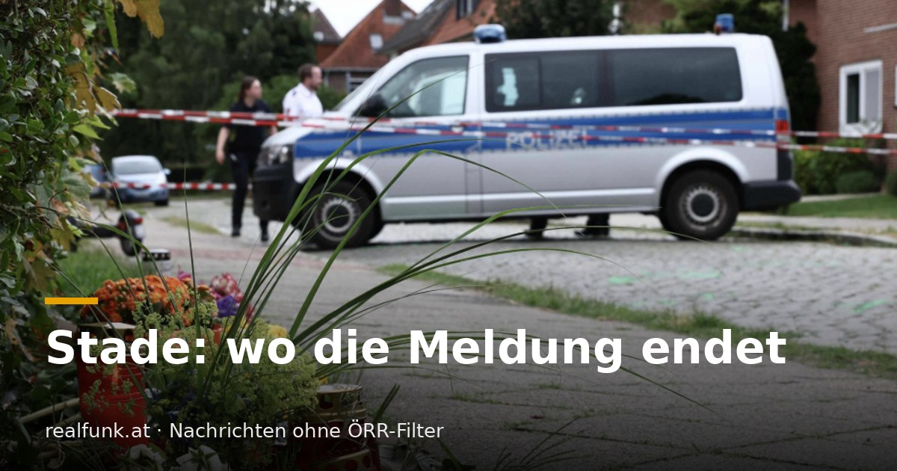

Stade: wo die Meldung endet

Manchmal liegt der Tell nicht darin, was ein Sender verschweigt, sondern darin, wo er aufhört. Den Sechsfachmord von Stade hat der ÖRR gemeldet, samt Haftbefehl, mutmaßlichem Motiv und der Festnahme der Fluchtwagen-Fahrerin. Genau bei ihr endet die Meldung, kurz bevor es unbequem wird.
Am 29. Juni wurden in einer Jugendhilfeeinrichtung in Stade sechs Menschen erschossen, drei Mitarbeiter des Jugendamts der Region Hannover und drei der Einrichtung. Die Staatsanwaltschaft wertet die Tat als sechsfachen Mord, gegen einen 45-jährigen Tatverdächtigen erging Haftbefehl, mutmaßliches Motiv laut Polizei ein Sorgerechtsstreit. Es gilt die Unschuldsvermutung. Der ÖRR berichtete das am 30. Juni und nannte auch die Festnahme einer 65-Jährigen, die den Fluchtwagen gefahren hatte. Dort schließt der Text.
Was Tage später andernorts berichtet und beim ÖRR nicht nachgereicht wurde: Die 65-jährige Fahrerin ist die Schwiegermutter eines SPD-Landesbeauftragten für Migration und Teilhabe und arbeitete als Migrationsberaterin beim Verband binationaler Familien und Partnerschaften, einer bundesweit tätigen NGO, die laut den Berichten für 2025 und 2026 zusammen rund 900.000 Euro aus dem Bundesprogramm „Demokratie leben!" erhielt. Die Frau wurde nach kurzer Festnahme wieder freigelassen.
Fair bleibt festzuhalten, was das nicht ist: Die Behörden sehen im Fahren des Wagens keine Beteiligung an den Morden, die Fahrerin ist auf freiem Fuß, und eine familiäre Nähe macht niemanden zum Täter. Der betroffene Politiker informierte die Ermittler nach eigenen Angaben selbst, als er über Medien davon erfuhr. Nichts davon gehört unterschlagen, und nichts davon schreiben wir als Schuldspruch.
Und doch ist die Konstellation eine Nachricht: eine steuerfinanzierte Migrations-NGO, die Schwiegermutter eines SPD-Amtsträgers, ein Fluchtwagen nach sechs Morden. Man stelle sich dieselbe Verbindung ins AfD-Umfeld vor, eine Beraterin einer AfD-nahen Struktur am Steuer. Das Parteietikett stünde in der Schlagzeile, nicht Tage später bei anderen. Beim ÖRR bleibt es bei „eine 65-Jährige".